Text as Data: Week 7
Matthias Haber
27 October 2021
Goals for Today
Goals
- Solution assignment 1
- ggplot2
- Visualizing text
Solution to assignment 1
Regular expressions
addresses <-c("221B Baker St., London", "1600 Pennsylvania Avenue, Washington D.C.",
"742 Evergreen Terrace, Springfield")
sentences <- stringr::sentences[1:20]
field_names <- c("order_number", "order_date", "customer_email", "product_title", "amount")
email <- c("tom@hogwarts.com",
"tom.riddle@hogwarts.com",
"tom@hogwarts.eu.com",
"potter@hogwarts.com",
"harry@hogwarts.com",
"hermione+witch@hogwarts.com")
files <- c(".bash_profile",
"workspace.doc",
"img0912.jpg",
"updated_img0912.png",
"documentation.html",
"favicon.gif",
"img0912.jpg.tmp",
"access.lock")Convert addresses to lower-case
## [1] "221b baker st., london"
## [2] "1600 pennsylvania avenue, washington d.c."
## [3] "742 evergreen terrace, springfield"Extract digits from addresses
## [1] "221" "1600" "742"Split addresses into two parts: street & city
## [,1] [,2]
## [1,] "221B Baker St." "London"
## [2,] "1600 Pennsylvania Avenue" "Washington D.C."
## [3,] "742 Evergreen Terrace" "Springfield"Split addresses into three parts: house number, street & city
## [,1] [,2] [,3]
## [1,] "221B" "Baker St." "London"
## [2,] "1600" "Pennsylvania Avenue" "Washington D.C."
## [3,] "742" "Evergreen Terrace" "Springfield"For sentences that end with the letter “t” extract the last word
## [[1]]
## character(0)
##
## [[2]]
## character(0)
##
## [[3]]
## character(0)
##
## [[4]]
## character(0)
##
## [[5]]
## character(0)
##
## [[6]]
## character(0)
##
## [[7]]
## character(0)
##
## [[8]]
## character(0)
##
## [[9]]
## character(0)
##
## [[10]]
## character(0)
##
## [[11]]
## character(0)
##
## [[12]]
## character(0)
##
## [[13]]
## character(0)
##
## [[14]]
## character(0)
##
## [[15]]
## [1] "feet."
##
## [[16]]
## character(0)
##
## [[17]]
## [1] "heat."
##
## [[18]]
## character(0)
##
## [[19]]
## character(0)
##
## [[20]]
## character(0)Extract the first 30 characters from each sentence
## [1] "The birch canoe slid on the..." "Glue the sheet to the dark ..."
## [3] "It's easy to tell the depth..." "These days a chicken leg is..."
## [5] "Rice is often served in rou..." "The juice of lemons makes f..."
## [7] "The box was thrown beside t..." "The hogs were fed chopped c..."
## [9] "Four hours of steady work f..." "Large size in stockings is ..."
## [11] "The boy was there when the ..." "A rod is used to catch pink..."
## [13] "The source of the huge rive..." "Kick the ball straight and ..."
## [15] "Help the woman get back to ..." "A pot of tea helps to pass ..."
## [17] "Smoky fires lack flame and ..." "The soft cushion broke the ..."
## [19] "The salt breeze came across..." "The girl at the booth sold ..."Replace all underscores in field_names with spaces and capitalize the first letter of each word
## [1] "Order Number" "Order Date" "Customer Email" "Product Title"
## [5] "Amount"Extract names appearing before @ from email
## [1] "tom" "tom.riddle" "tom" "potter"
## [5] "harry" "hermione+witch"Extract the three images (.jpg, .png, .gif) from files
## [1] NA NA "img0912.jpg"
## [4] "updated_img0912.png" NA "favicon.gif"
## [7] NA NAWeb scraping & tidytext
Extract the text of J.K. Rowling’s commencement speech at Harvard University
Convert the text to tibble, remove the first and 15th line, add paragraph number
Tokenize the text into words and remove stop words
List the 5 most frequent words
## # A tibble: 5 × 2
## word n
## <chr> <int>
## 1 life 14
## 2 failure 13
## 3 day 10
## 4 people 9
## 5 parents 8Readtext and quanteda
Read in the UK manifestos and create document names from file names
Create a corpus out of the documents
## Corpus consisting of 18 documents, showing 18 documents:
##
## Text Types Tokens Sentences party year
## Con-1918.txt 727 2084 56 Con 1918
## Con-1922.txt 567 1665 42 Con 1922
## Con-1923.txt 641 1715 59 Con 1923
## Con-1924.txt 1016 3169 85 Con 1924
## Con-1929.txt 1699 7103 222 Con 1929
## Con-1931.txt 387 895 30 Con 1931
## Lab-1918.txt 476 1241 47 Lab 1918
## Lab-1922.txt 589 1401 54 Lab 1922
## Lab-1923.txt 550 1259 39 Lab 1923
## Lab-1924.txt 877 2495 69 Lab 1924
## Lab-1929.txt 997 2720 116 Lab 1929
## Lab-1931.txt 812 2267 91 Lab 1931
## Lib-1918.txt 424 917 27 Lib 1918
## Lib-1922.txt 467 1057 48 Lib 1922
## Lib-1923.txt 863 2362 85 Lib 1923
## Lib-1924.txt 871 2401 80 Lib 1924
## Lib-1929.txt 564 1354 35 Lib 1929
## Lib-1931.txt 413 1013 26 Lib 1931Overwrite the party column with new labels
party <- c(rep("Conservatives", 6), rep("Labour", 6), rep("LibDems", 6))
manifesto_corpus$party <- party
summary(manifesto_corpus)## Corpus consisting of 18 documents, showing 18 documents:
##
## Text Types Tokens Sentences party year
## Con-1918.txt 727 2084 56 Conservatives 1918
## Con-1922.txt 567 1665 42 Conservatives 1922
## Con-1923.txt 641 1715 59 Conservatives 1923
## Con-1924.txt 1016 3169 85 Conservatives 1924
## Con-1929.txt 1699 7103 222 Conservatives 1929
## Con-1931.txt 387 895 30 Conservatives 1931
## Lab-1918.txt 476 1241 47 Labour 1918
## Lab-1922.txt 589 1401 54 Labour 1922
## Lab-1923.txt 550 1259 39 Labour 1923
## Lab-1924.txt 877 2495 69 Labour 1924
## Lab-1929.txt 997 2720 116 Labour 1929
## Lab-1931.txt 812 2267 91 Labour 1931
## Lib-1918.txt 424 917 27 LibDems 1918
## Lib-1922.txt 467 1057 48 LibDems 1922
## Lib-1923.txt 863 2362 85 LibDems 1923
## Lib-1924.txt 871 2401 80 LibDems 1924
## Lib-1929.txt 564 1354 35 LibDems 1929
## Lib-1931.txt 413 1013 26 LibDems 1931Tokenize and preprocess the text and find context for discussion around “europe”
manifesto_tokens <- tokens(manifesto_corpus, what = "word",
remove_numbers = TRUE,
remove_punct = TRUE) %>%
tokens_tolower()
kwic(manifesto_tokens, "europe*")## Keyword-in-context with 27 matches.
## [Con-1918.txt, 76] forever in the continent of | europe |
## [Con-1918.txt, 203] to make the peace of | europe |
## [Con-1918.txt, 277] settle the political future of | europe |
## [Con-1918.txt, 362] the foundations of a new | europe |
## [Con-1922.txt, 1306] war we have lost in | europe |
## [Con-1923.txt, 150] political and economic disorganisation of | europe |
## [Con-1923.txt, 192] of a true peace in | europe |
## [Con-1923.txt, 278] the disorganisation and poverty of | europe |
## [Con-1923.txt, 329] standard of living in many | european |
## [Con-1923.txt, 783] arising from the distractions of | europe |
## [Con-1924.txt, 638] restore stable economic conditions in | europe |
## [Con-1924.txt, 989] settled state of affairs in | europe |
## [Con-1929.txt, 1689] more upon them than any | european |
## [Con-1929.txt, 5833] depends has been assured in | europe |
## [Con-1929.txt, 5848] security has been extended from | europe |
## [Con-1929.txt, 6148] states of america as in | european |
## [Lab-1918.txt, 174] of liberty and democracy in | europe |
## [Lab-1918.txt, 197] intervention on the side of | european |
## [Lab-1922.txt, 80] to pay turkey's relations with | europe |
## [Lab-1929.txt, 1185] election the labour government found | europe |
## [Lib-1923.txt, 226] upon trade and credit throughout | europe |
## [Lib-1923.txt, 255] or moral question has confronted | europe |
## [Lib-1923.txt, 274] the ruhr in no great | european |
## [Lib-1923.txt, 475] the chief rallying powers in | europe |
## [Lib-1923.txt, 502] exercise any guiding influence upon | european |
## [Lib-1923.txt, 607] the government have failed in | europe |
## [Lib-1923.txt, 724] that the economic restoration of | europe |
##
## other tasks directly arising out
## and to deal with the
## should be supported by the
## that occasion for further wars
## can best be replaced by
## consequent on the great war
## but that at the best
## accompanied by broken exchanges and
## countries has exposed us to
## is in no sense free
## might only prove disastrous to
## and for co-operation in all
## nation at the present time
## and germany has entered the
## to the whole world by
## and world politics so also
## it has warned the coalition
## reaction will be disastrous labour
## and the freedom of the
## distracted by hostility and left
## are the main cause of
## than the french and belgian
## question for at least a
## after the napoleonic wars for
## affairs in eastern policy the
## and asia alike to make
## is the necessary condition ofRemove stop words and convert into bigrams
Create a document feature matrix for only Liberal Democrats
Find out how many bigrams appear only once
## [1] 3453ggplot2
ggplot2
R has several systems for making graphs, but ggplot2 is one of the most elegant and most versatile. ggplot2 implements the grammar of graphics, a coherent system for describing and building graphs.
ggplot2 examples

ggplot2 examples

ggplot2 examples

ggplot2 examples

The grammar of graphics
- Each plot is made of layers. Layers include the coordinate system (x-y), points, labels, etc.
- Each layer has aesthetics (
aes) including x & y, size, shape, and color. - The main layer types are called geometrics(
geom) and include lines, points, etc.
The grammar of graphics
A ggplot is build piece by piece

The grammar of graphics

The grammar of graphics

ggplot workflow
Tell the
ggplot()function what your data are.Tell
ggplotwhat relationships we want to see.Tell
ggplothow you want to see the relationships in your data.Add additional layers to the p object one at a time.
Use additional functions to adjust scales, labels, tick marks.
Components of a ggplot2 graph
- data: Variables mapped to aesthetic attributes
- aesthetic: Visual property of the plot objects
- geom: Geometrical object used to represent data
- stats: Statistical transformations of the data
- scales: Values mapped to aesthetic attributes
- coord: Coordinate system
- facets: Subplots that each display one subset of the data
Mapping
We start creating a plot by telling ggplot what our data are and by storing the function in an object called p. For example, let’s say we want to use the gapminder data to plot life expectancy against GDP per capita:
The data argument tells ggplot where to find the variables it is about to use. The mapping = aes(...) argument links variables to things you will see on the plot.
Mapping
What happens if we just type p into the console at this point and hit return?
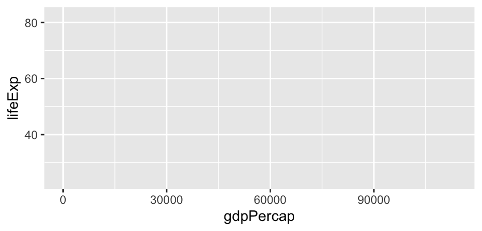
Choosing a geom
p already contains some information about out plot structure but we haven’t given it any instructions yet about what sort of plot to draw. We need to add a layer to the plot by using the geom_ function:
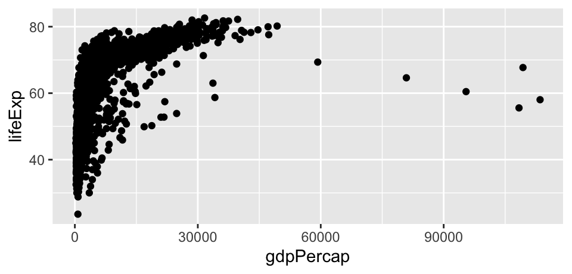
Choosing a geom
Let’s try a different geom_ and see what happens:
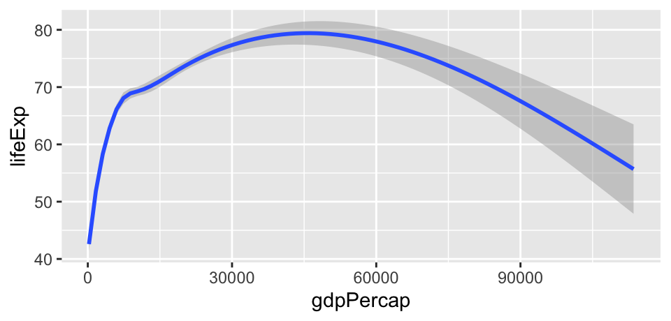
Choosing a geom
If we want to see data points and a smoothed line together we simply add geom_point() to the plot:
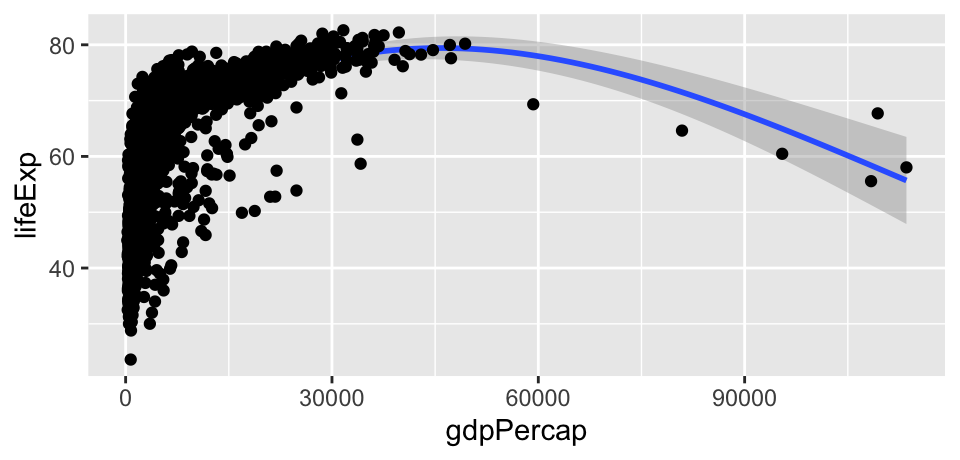
Adjusting the scales
GDP pc does not seem to be normally distributed. We can account for that and transform the x-axis from a linear to a log scale by adding the scale_x_log10() function.
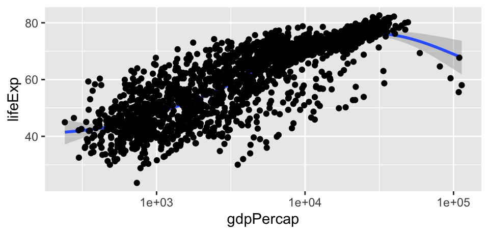
Labels and titles
Having created an interesting plot, we could now polish it up with nicer axis labels and titles. For example, let’s swap the scientific notation on the x-axis for something more meaningful such as US dollars. The labels on the tick-marks can be controlled through the scale_ functions. You can supply your own functions are use the pre-made functions from the handy scales library.
Labels and titles
Labels and titles
We can adjust the axis labels and add plot titles using the labs() function:
Labels and titles
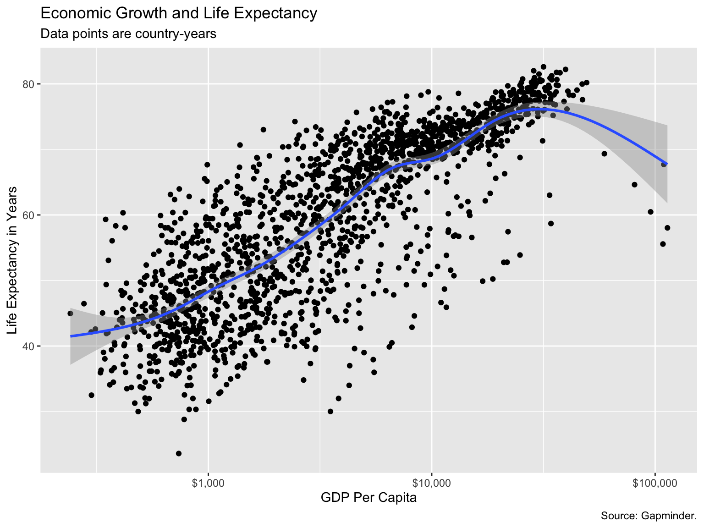
Aesthetics mapping
We can easily map variables in our dataset to aesthetics such size, color, shape, and so on. For example, to map color to continent:
Aesthetics mapping
p <- ggplot(data = gapminder,
mapping = aes(x = gdpPercap,
y = lifeExp,
color = continent))
p + geom_point() + scale_x_log10()
Aesthetic mappings
geom_ can take many other arguments that will affect how the plot looks. Some, such as color and size, have the same name as mappable arguments. Others are specific arguments only available for the geom_ function. Let’s look at a few examples:
Aesthetic mappings
Change the size
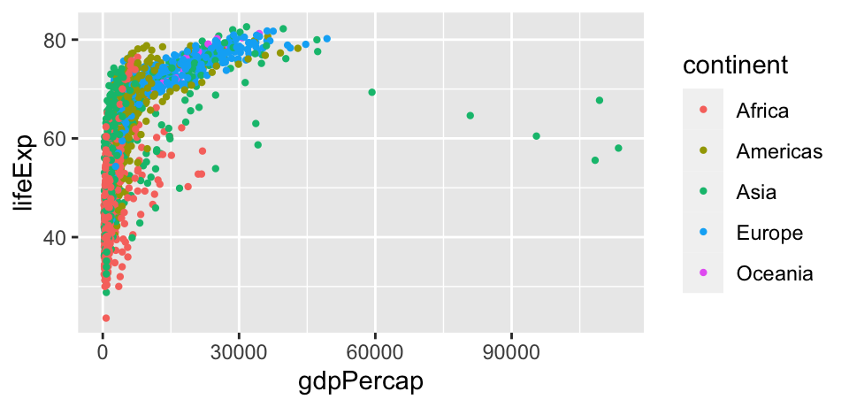
Aesthetic mappings
Adjust transparency
Aesthetic mappings
Change the color of the smoother
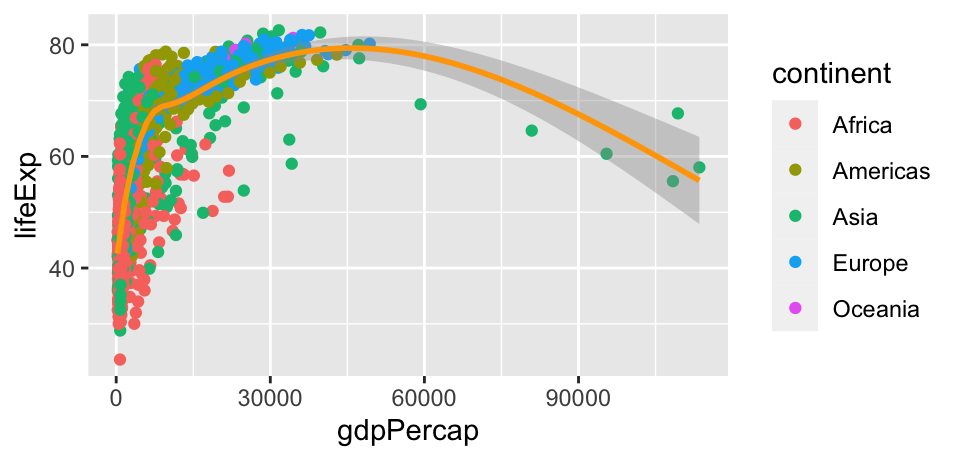
Aesthetic mappings per geom
Let’s again map our continent variable to the color aesthetic. This time we also add a smoother.
Aesthetic mappings per geom

Aesthetic mappings per geom
Both points and smoother are colored by continent. We can use fill inside aes() to color the interior of the smoother’s standard error ribbon:
Aesthetic mappings per geom
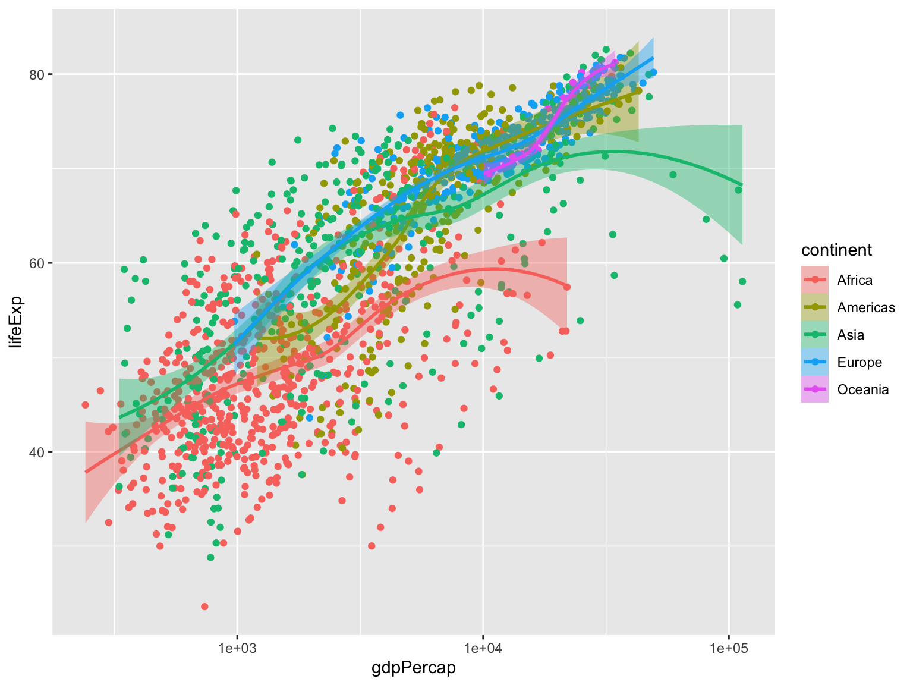
Aesthetic mappings per geom
Having 5 different smoothers makes the plot difficult to read. If we just want one line but keep the colored points we can map the aesthetics we want only the geom_ functions that we want them to apply to:
Aesthetic mappings per geom
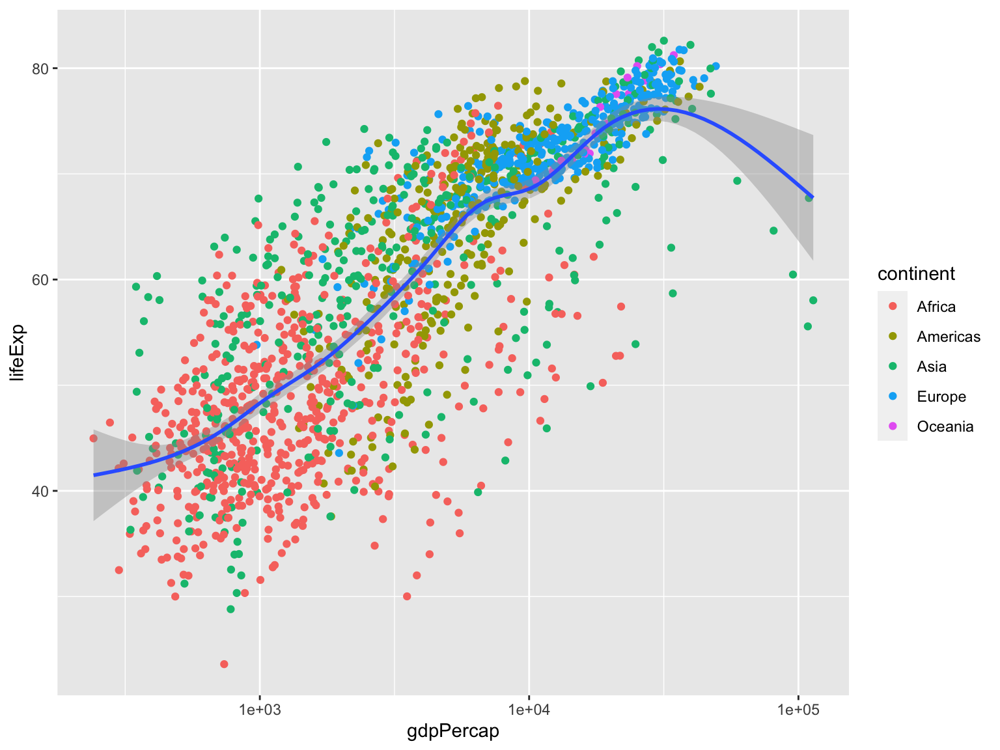
Group, facet, transform
There are a number of additional functions in ggplot that are frequently used to plot data. group, for examples, allows to learn more about the internal structure of your data (). Let’s say we wanted to plot the trajectory of economic development over time for each country. How would we do that?
Group
What’s gone wrong here?
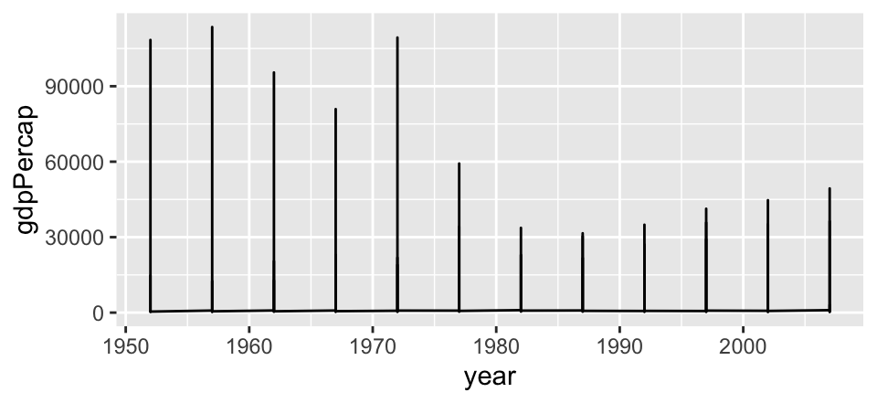
Group
ggplot does not know that the yearly observations in the data are grouped by country. We have to tell it:
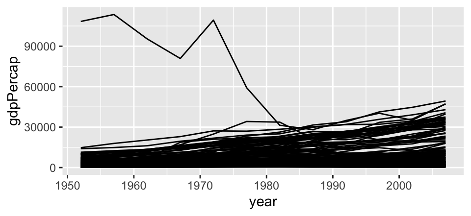
Facet
The plot we just made looks a little messy. To make the trend clearly we could facet the data by a third variable and plot the results in separate panels. We use facet_wrap() to split our plot by continent:
Facet
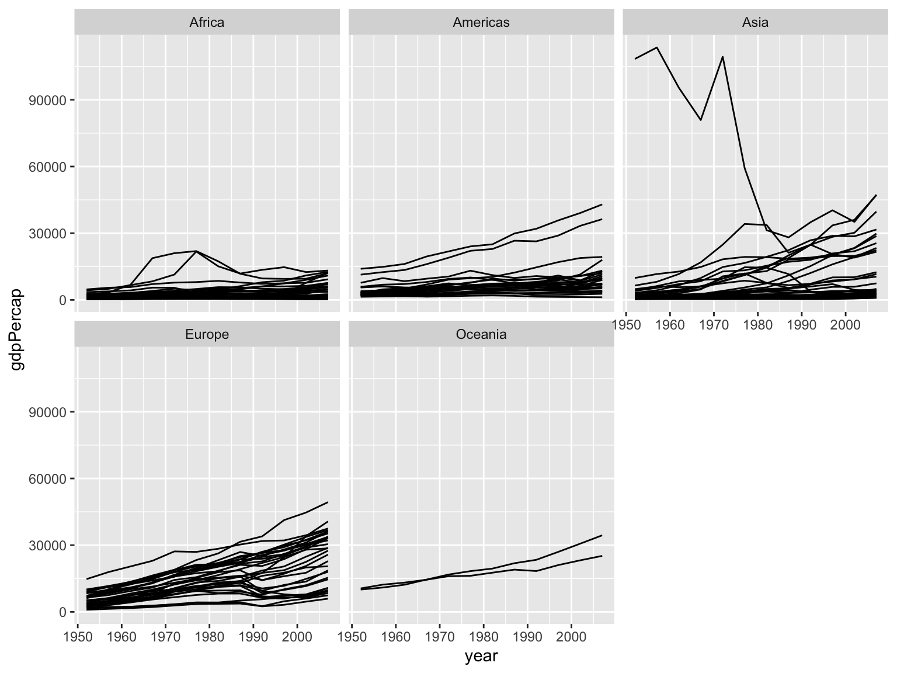
Facet
We can also use the ncol argument to facet_wrap() to control the number of columns. We can add a smoother and a few cosmetic enhancements that make the graph a little more effective. Any geom that we include will be layered within each facet:
Facet
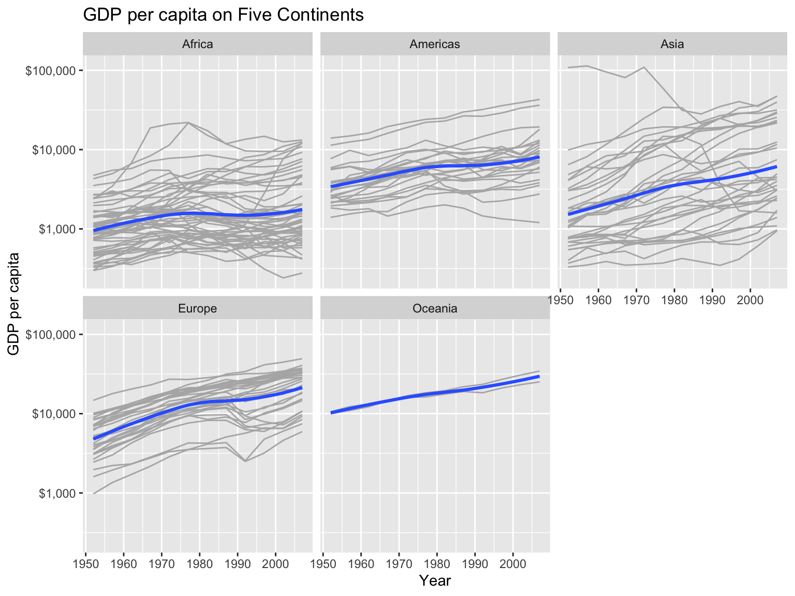
Facet
facet_wrap() is best used when you want a series of small multiples based on a single categorical variable. If you want to cross-classify some data by two categorical variables you should try facet_grid() instead.
Plotting Distributions: Distributions of categorical data
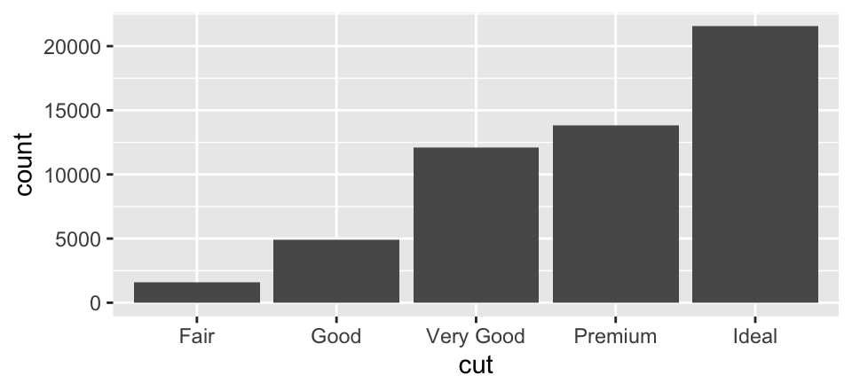
Plotting Distributions: Distributions of continuous data
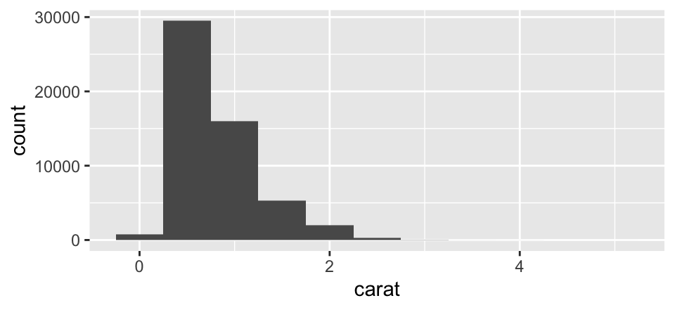
Plotting Distributions: Boxplot
We can use geom_boxplot() to plot covariation between continuous and catagorical variables
ggplot(data = mpg, aes(x = class, y = hwy, fill = class)) +
geom_boxplot(aes(x=reorder(class, hwy,FUN = median),
y = hwy)) +
theme(legend.position = "none")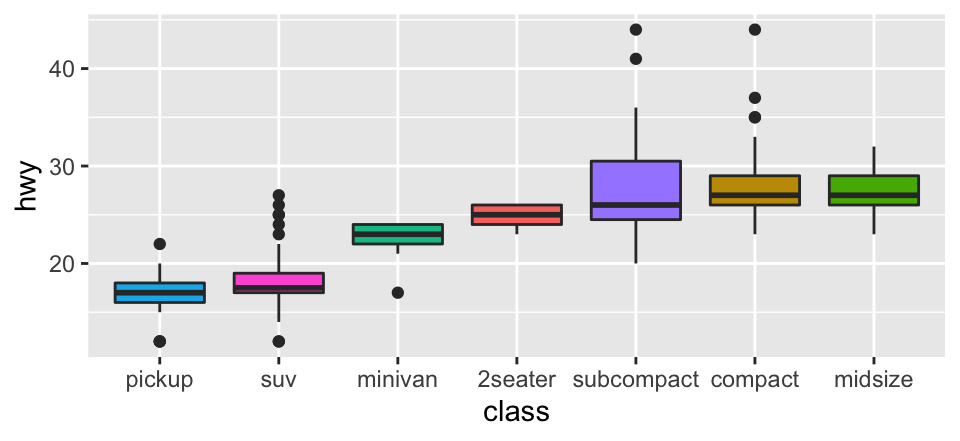
Plotting Distributions: Tile Plot
We can use geom_tile to plot the covariation between two categorical variables
diamonds %>%
count(color, cut) %>%
ggplot(mapping = aes(x = color, y = cut)) +
geom_tile(mapping = aes(fill = n))
Plotting Distributions: Scatter Plots
The easiest way to visualize the covariation between two continuous variables is to draw a scatterplot with geom_point().
p <- ggplot(data=gapminder, mapping = aes(x = gdpPercap,
y = lifeExp)) +
geom_point() +
scale_x_log10(labels = scales::dollar) +
labs(x = "GDP Per Capita",
y = "Life Expectancy in Years",
title = "Economic Growth and Life Expectancy",
subtitle = "Data points are country-years",
caption = "Source: Gapminder.")Plotting Distributions: Scatter Plots
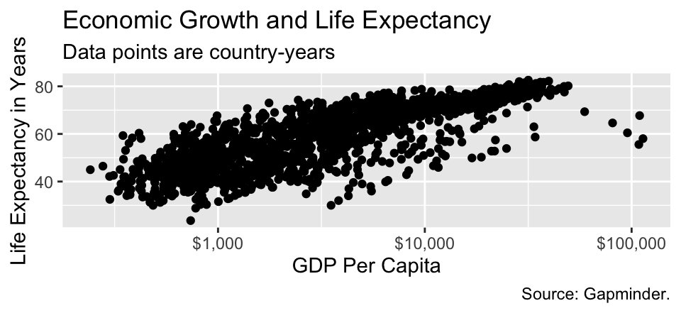
Saving and exporting ggplot objects
ggsave() is a convenient function for saving the last plot that you displayed. It also guesses the type of graphics device from the extension. This means the only argument you need to supply is the filename.
More theme packages
- ggpubr for publication-ready plots
- ggthemes for additional themes and scales, especially ones that match other software (Tableau)
- hrbrthemes my personal favorite theme package
ggplot2 resources
Visualizing text
Loading & tokenizing Moby Dick
plot frequent words
To plot the frequency of often used words in the novel you first need to install and load the quanteda.textstatslibrary.
plot frequent words
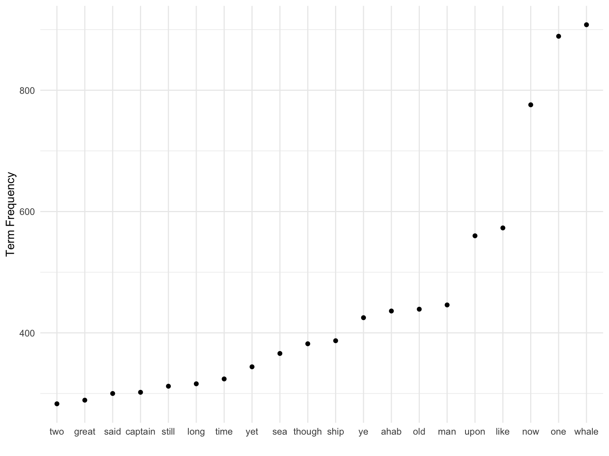
plot relative word frequencies
The total number of occurrences of a word is not very useful. To plot the frequency as a percentage instead we first need to created a new dfm with the dfm_weight function and scheme = "prop".
plot relative word frequencies
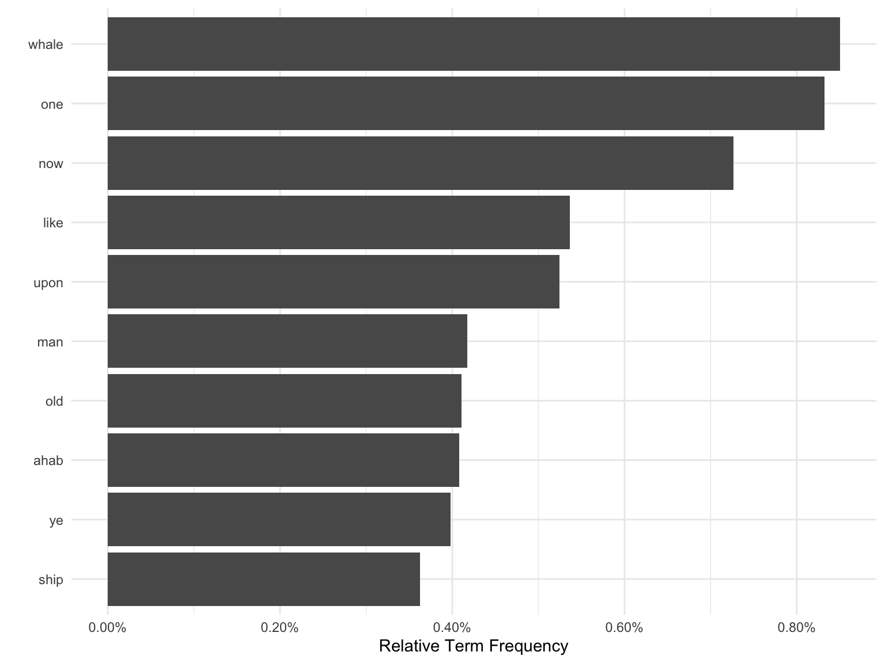
Lexical dispersion
Quanteda also has a number of plotting functions that are based on ggplot2 and are contained inside the quanteda.textplots package.
For example, to visualize the occurrences of certain words throughout the novel we can create a dispersion plot. The great thing is that we can create the plot directly from the object returned by the kwic() function.
Lexical dispersion
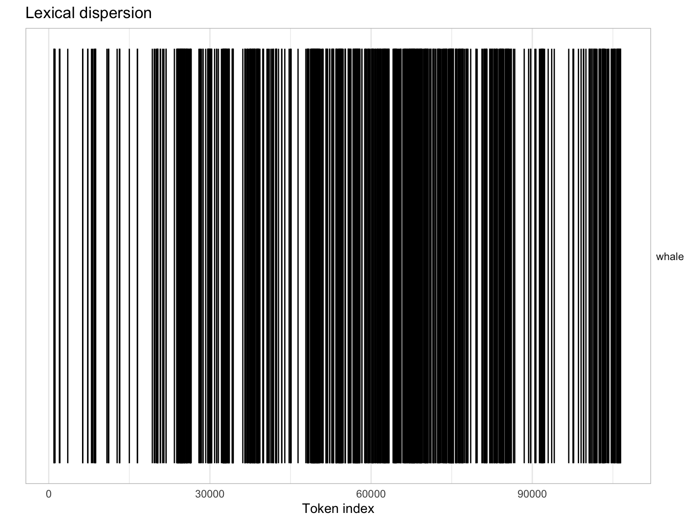
Lexical dispersion
We can also create dispersion plots for multiple words:
Lexical dispersion

Analyzing chapters
If we are interested in analyzing the book’s individual chapters in more detail we first need to create a corpus object and supply them as document names.
Analyzing chapters
Analyzing chapters
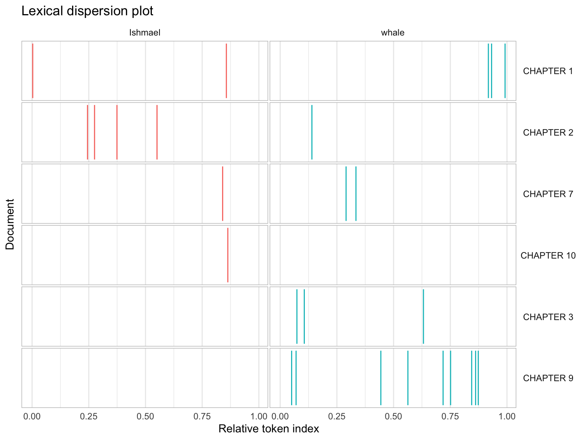
Plotting word clouds
Although there are a lot of things wrong with wordclouds you can easily create them with the textplot_wordcloud function.
Plotting word clouds
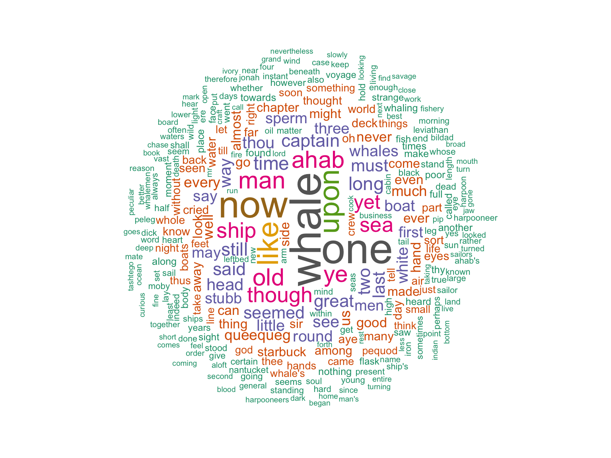
Plotting word clouds
You can even create grouped wordclouds using dfm_group.
Plotting word clouds
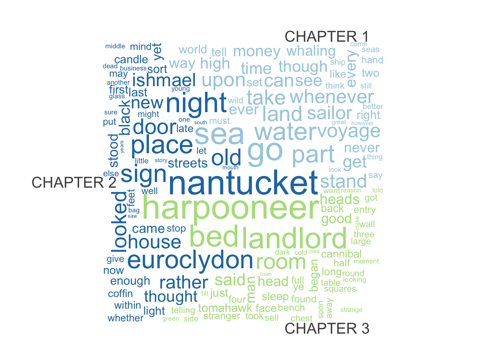
Wrapping up
Questions?
Outlook for our next session
- Next week we’ll learn how to create custom dictionaries to label and cluster texts.
That’s it for today
Thanks for your attention!